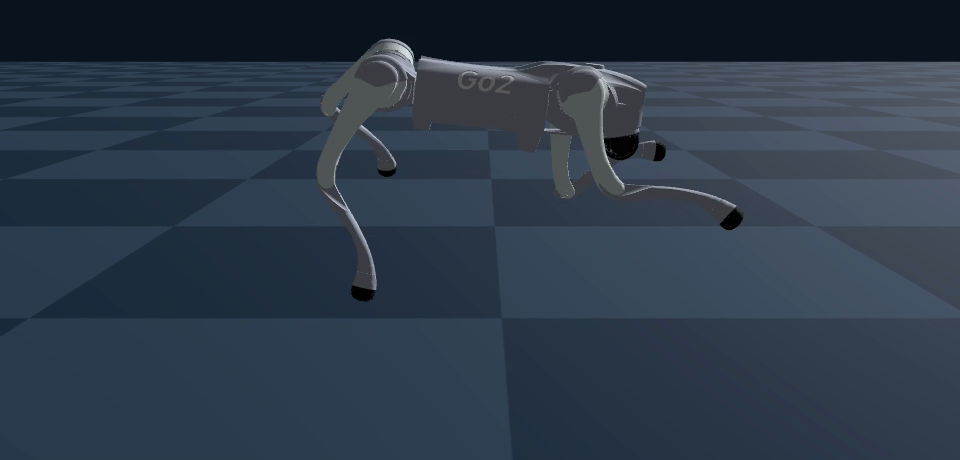
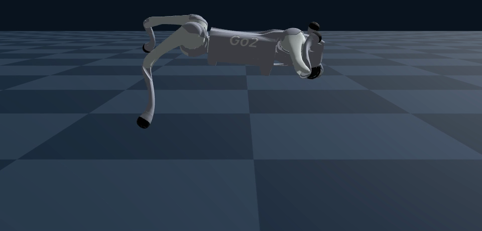

四脚ロボット Unitree Go2 に、学習によって歩行以外の動作を身につけさせ、障害物を越えるなどの走破性を高める。
Mac 上でシミュレータを動かし、報酬を変えながら「学習 → シミュレータの映像と数値で確認 → 報酬の調整 → 再学習」のループを繰り返して進めた。
報酬の方向性が正しいかどうかを判断できる最低限の回数まで学習回数を絞り、1 回あたりの学習時間を短縮した。これにより、仮説の検証を数多く繰り返せるようにした。
| 仮説 | 変更内容 | 結果 |
|---|---|---|
| 1 | フラグ中は体高の目標を +15cm 上げる | 背伸びするだけで跳ばない（最高 0.393m） |
| 2 | 4 本とも浮いている時間に報酬を出す | 跳ばない。一度も浮かないので報酬が 0 のまま学習が進まない |
| 3 | 上向きの速度に報酬を出し、フラグ中は上下速度の罰を外す | 途中で止めたため結果なし |
| 4 | 仮説3 に加えて、フラグ中は体高の罰も外す | 初めて跳ぶ（最高 0.767m）が、空中で傾きが 10° を超えて打ち切られる |
| 5 | 上向き速度の報酬を 0.3 秒以内・体高 0.45m 未満に制限する | 転倒はなくなったが、1 回のフラグで平均 3.67 回跳ねる |
| 6 | 滞空の報酬を 1 回目の飛行だけにする | 1 回跳びになる（最高 0.538m）が、普段から低くしゃがんで構える |
| 7 | フラグが 0 のときの体高の罰を -50 → -500 に強める | 普段の姿勢が 0.237m → 0.280m に戻る（最高 0.415m） |
| 8 | 踏み切りの窓を 0.3 → 0.5 秒に延ばす | 胴体から床に落とし、その反動で上向き速度を稼ぐ。2 回跳びになる |
| 9 | しゃがみ期を分け、その間は上向き速度の報酬を出さない | 胴体の接地は消えたが、時間をずらして同じ「落下＋反動」を続ける |
| 10 | 胴体が床に触れたら罰を与える | |
| 11 | しゃがみ期の下向き速度に罰を与える | |
| 12〜13 | フラグの間にちょうど 1 回跳んだら +4 の報酬を出す | 1 回跳びの割合が一時 25% まで上がるが、定着しない |
| 14 | 滞空の報酬をなくす／0.25 秒以上の滞空だけに払う | それでも落下する。動機は滞空ではなく上向き速度の反動だと特定 |
| 15 | 上向き速度の報酬の重みを 20 → 10 に下げる | 初めて、落下なしのきれいな 1 回跳びになる（最高 0.403m） |
| 16 | 滞空報酬の重みを 10 → 20 に上げる | 高く跳ぶ（最高 0.514m）が、着地の小さな跳ねで 2 回になる |
| 17 | 滞空報酬の下限を 0.25 → 0.2 秒に下げる | |
| 18 | 滞空報酬を 1 回目の飛行だけに戻す | |
| 19 | 2 回目以降の飛行に罰を与える | 罰を恐れて跳ばなくなる（背伸びのみ、最高 0.345m） |
| 20 | 19 の罰を外し、着地して 4 本足で立っている時間に報酬を出す | 毎回ちょうど 1 回跳ぶ（最高 平均 0.494m／最大 0.518m、転倒 0、胴体の接地 0） |


ジャンプのように複数の動作を組み合わせた動きでは、モデルが報酬の抜け道を見つけ、そこに収束してしまう。抜け道を塞ごうとして別の報酬を追加すると、それがまた新たな抜け道になり、問題はより解決しにくくなった。
そこで、ジャンプという動作をどう定義するか、ロボットがどのような情報を取得できるかを考慮して報酬を設計し直したところ、その場でのジャンプは一応達成できた。ただし、跳び方にはまだ不自然なところが残っている。なお、歩きながらの 1 回跳びと障害物越えは今後の課題である。